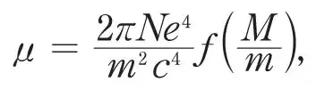
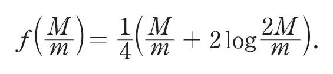
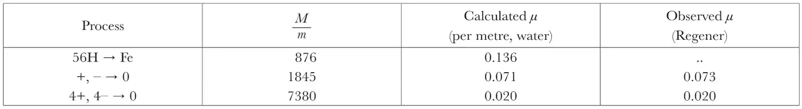

中文
中文J. Jeans
Editor’s Note
James Jeans notes here that one of the sacred principles of science was giving way. It had been a bedrock belief of physicists for centuries that matter can be neither created nor destroyed. Yet now, he points out, it looked increasingly certain that the process by which stars generate energy could only be explained through the annihilation of matter. Evidence showed that the average star has already emitted many times its own mass in radiation. The life history of a star seemed to be a continual annihilation of its substance, as massive particles give up their energy to produce radiation. The explanation for this is now seen to come from nuclear fusion, in which mass and energy are interconverted via Einstein’s E = mc2. 中文
THROUGHOUT the greater part of the history of science, matter was believed to be permanent, incapable either of annihilation or of creation. Yet a large amount of astronomical evidence now seems to point to the annihilation of matter as the only possible source of the energy radiated by the stars. A position has thus been reached in which the majority of astronomers think it probable that annihilation of matter constitutes one of the fundamental processes of the universe, while many, and perhaps most, physicists look on the possibility with caution and even distrust. I have thought it might be of interest to attempt a survey of the present situation in respect to this question. 中文
The Astronomical Evidence
The astronomical argument for the annihilation of matter is based, not on the intensity of stellar radiation, but on its duration. No transformation of a less drastic nature than complete annihilation is found capable of providing continuous radiation for the immense periods of time throughout which the stars have, to all appearances, lived. For, with one conspicuous exception, to be discussed later, all available methods of estimating stellar ages are found to indicate that the stars, as a whole, have already lived through periods of millions of millions of years. 中文
Some of these methods depend on the rate of gravitational interaction between adjacent stars; for example, the velocities with which the stars move through space show an approximation to equipartition of energy, such as must have required millions of millions of years for its establishment. The individual members of the groups of stars known as moving star clusters appear to have had their courses changed by the gravitational pull of passing stars to an extent which again indicates action extending over millions of millions of years. The same is true of the orbits of visual binary stars. In each of these three cases, the clock we use has for its unit a time analogous to what is called the “time of relaxation” in the theory of gases; in this comparison the single stars correspond to monatomic molecules, and binary stars to diatomic molecules, while the disintegration of a moving star cluster provides the counterpart of the process of gaseous diffusion. 中文
These estimates of stellar ages are, of course, valid only if we assume that the changes in stellar motions and arrangements are produced solely by the gravitational pulls of other stars. Other causes are conceivable, and must indeed contribute something—pressure of radiation, bombardment by stray matter in space, or by the atoms of cosmic clouds diffused through space. But calculation shows that the contributions from these sources are quite negligible. Indeed, when we take them into account, the discussion of stellar movements is no longer a problem of astronomy, but of physics; we have to treat the stars as Brownian “particles” in a physical medium. When they are so treated, we find that the starry medium has a temperature—in the sense in which we speak of the temperature of moving Brownian particles—of the order of 1062 degrees. Both individual and binary stars exhibit the equipartition of energy which corresponds to a temperature of this order, whence it is obvious that physical agencies such as pressure of radiation and atomic pressures, which are in equilibrium with far lower temperatures of the order only of 104 degrees, cannot have made any appreciable contributions to the establishment of this equipartition; they act as mere drags on the stellar motions, tending on the average to check their speed. 中文
In a second class of binary stars, the spectroscopic binaries, the two components are so close together that the gravitational pull from passing stars is approximately the same on each, and so cannot exert the differential action which would change the relative orbits of the constituent masses. Clearly there can be no question of any approximation to equipartition of energy in the internal motions of these systems. Nevertheless, it is possible to trace a steady sequence of configurations, beginning with almost circular orbits in which the two constituents are practically in contact—this being probably the condition of a system which has just formed by fission—and proceeding to orbits which are far from circular in shape, in which the components are at a substantial distance apart. It seems likely, although not certain, that this sequence is one of advancing age; when the parent star first breaks up to form a binary, the newly formed system starts at the first-mentioned end and moves gradually along the sequence. Now observation shows, beyond all doubt, that the stars at the far end of this sequence are substantially less massive than those at the beginning. We know the rate at which the various types of stars are radiating their mass away in the form of radiation, and from this we can calculate the time needed to produce the difference of mass which is observed to exist between the two ends of the sequence; again it proves to be a matter of millions of millions of years. Here the clock we use is the rate of outflow of radiation from a star, or its equivalent, the rate of loss of mass. 中文
Against these various estimates must be set one piece of evidence which, if interpreted in the most obvious way, seems to point in exactly the opposite direction. This is, that the remote extra-galactic nebulae all show a shift of their spectral lines to the red, the amount of shift being approximately, although not exactly, proportional to the distance of the nebula. If this is interpreted in the most direct way, as a Doppler effect, the nebulae must all be scattering away from us and from one another in space, at so great a speed that the whole universe doubles its size about once in every 1,400 million years. Such a rate of increase seems quite inconsistent with the estimate which assigns ages of millions of millions of years to the stars. Calculation suggests that the original radius of the universe must have been of the order of 1,200 million light-years (Eddington), while the present radius of the universe appears to be only of the order of 2,000 million light-years (de Sitter). If these estimates could be treated as exact, we could fix the age of the universe definitely at just more than 1,000 million years, which is substantially less even than the age of the earth as indicated by its radioactive rocks. No one would claim any great degree of exactness for either of these estimates, especially the second, yet the general situation seems to forbid that the universe can have been doubling in size every 1,400 million years throughout a period of millions of millions of years. 中文
Although alternative interpretations are tenable, none of them seems entirely convincing, and the present situation is extremely puzzling. While there is obviously room for much difference of opinion, many astronomers consider it likely that some other explanation of the apparent recessions of the nebulae will be found in time, in which event the road will be clear for the acceptance of ages of millions of millions of years for the stars, as suggested by the main bulk of astronomical evidence. 中文
If such ages are provisionally accepted, calculation shows that the average star has already emitted many times its total mass in radiation; in other words, the average star must have started life with many times its present mass. Indeed, the sequence of spectroscopic binaries gives us a sort of picture of the life-history of a typical star. It starts with anything from ten to a hundred times the mass of the sun, and ends with a mass comparable to, or even less than, that of the sun. It is difficult to see where the enormous weight of the newly-born star can have been stored if not in the form of material atoms, or at any rate of material electrons and protons. Thus we are led to suppose that the life-history of the star is one of continual annihilation of its substance, the electrons and protons annihilating one another, and providing the energy for the star’s radiation in so doing. Such, at least, is the conjecture suggested to us by astronomy; the testing of the conjecture rests with physics. 中文
Highly Penetrating Radiation
If any direct evidence of this process of annihilation is to be obtained, it seems most likely that it will be found in the highly penetrating radiation which McLennan, Rutherford, and others discovered in the earth’s atmosphere at the beginning of the present century. The reason, as we shall see later, is that here, and here alone in the whole of physics, we are dealing with photons of radiation whose mass is comparable with that to be expected in photons resulting from the annihilation of electrons and protons. In the last few years, this radiation has been studied in great detail by Hess, Millikan, Regener, and many others. Their investigations scarcely leave room for doubt that the radiation enters the earth’s atmosphere from outer space; for which reason it is often described as “cosmic radiation”. 中文
It was at first taken for granted that this radiation must be of the nature of γ-radiation, since its penetrating power was greater than seemed possible for any kind of corpuscular radiation. This reason is now known to be inadequate, theoretical investigations having shown that corpuscular radiation, consisting of either α- or β-particles, might conceivably possess as high a penetrating power as the observed radiation. 中文
Other arguments have, however, stepped into the breach, and show very convincingly that the radiation cannot be of the nature of either α or β radiation. The central fact is, in brief, that radiation which consisted of charged particles would be influenced by a magnetic field, whereas cosmic radiation is not. An electron or other charged particle in motion acquires magnetic properties in virtue of its motion; the faster it moves, the greater the force which a magnetic field exerts upon it. Now the penetrating power of the radiation under consideration is so great that it could only be attained by charged particles, if these were moving with very high speeds indeed. If a swarm of such particles became entangled in the earth’s magnetic field, their high speed of motion would cause them to describe spiral paths coiled quite closely around the earth’s lines of magnetic force, with the result that they would fall far more abundantly near the earth’s magnetic poles than elsewhere. Epstein1 estimates that for a shower of electrons to have the penetrating power of cosmic radiation, they would have to move with the energy produced by a fall through about 1,000 million volts, and has calculated that the incidence of electrons moving with this energy would be limited entirely to comparatively small circles surrounding the two magnetic poles. Actually the observed radiation falls so evenly on the different parts of the earth’s surface that no variations have ever been detected. Members of the B.A.N.Z. Antarctic Expedition2 found the same intensity of radiation within 250 miles of the south magnetic pole as they had previously measured in South Australia, and as others had found in the United States, Canada, and the North Atlantic. This seems to leave little room for doubt that the radiation is of the nature of very hard γ radiation.3 中文
At first, some experiments by Bothe and Kohlhörster seemed to throw doubt on this conclusion. They had placed two Geiger counters, one vertically above the other, and found that the number of coincident discharges in the two counters was just about that which would be expected from purely geometrical considerations, if the radiation was corpuscular. Of course, the radiation which produced these ionisations was not necessarily the primary radiation which fell on the earth from outer space. Any primary radiation, as it traverses the atmosphere, is bound to produce secondary radiation of a variety of kinds, and any one of these might have been the immediate cause of the ionisation observed by Bothe and Kohlhörster. The primary radiation which first enters the earth’s atmosphere might quite conceivably be electromagnetic, while the ionisation might be produced by a secondary corpuscular radiation. 中文
To examine this possibility, Bothe and Kohlhörster placed a block of gold between their two counters. This naturally caused a reduction in the number of coincidences, and from the amount of the reduction it was possible to calculate the penetrating power of the radiation which actually effected the ionisations. It was found to be approximately the same as that of the primary radiation. So far, then, everything could be explained by supposing that it was the primary radiation itself which produced the ionisations in the counters, and that this was corpuscular in its nature. 中文
Recently this explanation has been tested by Moss–Smith4 and found wanting. He extended the apparatus used by Bothe and Kohlhörster, by mounting yet a third counter vertically below the original two, and first verified that the number of coincident ionisations in all three counters was that which their geometrical arrangement would lead us to expect. Now if the radiation which produced these ionisations were corpuscular, it ought to be deflected by a magnetic field. For example, if a sufficiently strong magnetic field were inserted between the second and third counters, the third counter ought to be entirely shielded from the radiation which had passed through the first two counters, so that the number of coincident ionisations in the first two counters would remain as before, while the number in the third counter would fall to zero. Moss–Smith found that this did not happen. Although his magnetic field had many times the strength needed to shield the third counter completely, its insertion had no effect on the number of coincident ionisations. This showed that the ionising radiation was not corpuscular, and as Bothe and Kohlhörster had already shown that the ionising radiation was probably identical with the primary radiation, it confirmed the theoretical arguments of Millikan and Epstein, which proved the primary radiation to be of the nature of γ radiation. 中文
The Mode of Production of the Radiation
If the primary radiation is of the nature of γ radiation, as these arguments and experiments seem to show, its origin ought to be disclosed by its penetrating power. Such radiation consists of photons, which may be compared to bullets, all moving with the same speed—the velocity of light. Their penetrating power accordingly depends solely on their mass, and a theoretical investigation enables us to deduce the one from the other. Every photon is, however, produced originally by an atomic upheaval, and its mass is exactly equal to the decrease of mass which the parent atom experienced as the result of this upheaval. For example, if the atom was one of hydrogen and the upheaval consisted of annihilation, the photon resulting from this annihilation must have a mass exactly equal to the original mass of the hydrogen atom, namely, 1.66×10–24 gm. Or again, if a proton and an electron mutually annihilate one another in any atom whatever, thus reducing its atomic weight by unity, the mass of the resulting photon must be equal to the combined masses of the proton and electron in situ in the atom, which again, except for a small “packing-fraction” mass, is equal to the mass of a hydrogen atom. 中文
The most effective means of investigating the penetrating power of cosmic radiation is to sink suitable apparatus to varying depths below the surface of a lake, and observe the ionisation produced by the incidence of the cosmic rays after absorption by varying depths of water. Observations of this type have been performed with great care and skill by Millikan, Regener, and others. 中文
Their results are none too easy of interpretation. L. H. Gray has shown5 that there is a sort of softening effect continually in progress by which the absorption of a quantum of energy produces a recoil electron, which in turn produces radiation of energy comparable to, although somewhat lower than, the energy of the original quantum. After the radiation has travelled through a certain thickness of absorbing material, the observed ionisation no longer gives a true measure of the intensity of the primary radiation which has escaped absorption, but of this primary radiation in equilibrium with all its softer secondary components. 中文
When this complication has been allowed for, the ionisation curve gives the intensity of the true primary radiation which remains after passing through varying thicknesses of absorbing matter. If this primary radiation consists of a mixture of constituents of different and clearly defined wavelengths, so that it has a line spectrum in the language of ordinary optics, these different constituents will have different coefficients of absorption. In such a case, it ought to be possible to analyse the observed curve into the superposition of a number of simple exponential curves, one for each constituent of the radiation. 中文
Actually, it is found that this can be done. Different experimenters do not obtain results which are altogether accordant, but all agree in finding that there is a long stretch, near the end of the range of the radiation, over which its intensity decreases according to a simple exponential law. This can only mean that one particular constituent of the radiation is so much harder than the others that it persists in appreciable amount after traversing a thickness of matter which has completely absorbed all the softer constituents. Regener, who has studied the problem in great detail, finds that the hardest radiation of all has an absorption coefficient of 0.020 per metre of water. Other experimenters have found values which agree with this to within about 10 percent. 中文
The mass of the photon can be deduced from the observed absorption coefficient μ of the radiation, by the use of a theoretical formula given by Klein and Nishina.6 This can be written in the form

where M is the mass of the photon, m of an electron, e, c have their usual meanings, and f represents a fairly complicated function of M/m. In all the applications of the formula to cosmic radiation, M/m is quite large, and for such values of M/m, f assumes the form

These formulae are calculated on the supposition that the absorption is caused by N electrons per unit volume, and that these are entirely free. This last condition can never be fully realised in Nature, since every electron is bound, more or less closely, to other electric charges. If an electron is bound to a system of mass m', we can allow for this binding by increasing m in the formula by a fraction of m', the fraction being large or small according as the coupling is tight or loose. Thus a loosely coupled electron behaves almost like a free electron, but an electron coupled tightly to a massive system, such, for example, as a proton or an atomic nucleus, behaves like an electron of very great mass, and the formula shows that this has no appreciable absorbing power. 中文
The Klein–Nishina formula has been tested by comparing it with observation for γ-rays. In the case of the lighter elements, it gives values which agree well with the observed absorption, provided all the extra-nuclear electrons are treated as free, while the nuclear electrons are disregarded entirely. It is natural to disregard these, because the coupling of nuclear electrons in the lighter elements is known to be so close that even the hardest γ-rays make but little impression on them. This is true for the lighter elements only; in the case of lead, Chao7 has found an additional scattering of the hardest γ-rays, which he believes to be of nuclear origin. In other words, he finds that some at least of the nuclear electrons in lead are not so closely coupled as to resist the onslaught of the hardest γ-radiation. Still less, then, can they be so closely coupled as to resist the incidence of the far more massive photons of cosmic radiation. From theoretical considerations of a very general nature8 it appears probable that in dealing with cosmic radiation, the N in the Klein–Nishina formula should refer to all electrons, nuclear as well as extra-nuclear, and not merely to the latter. A further term ought also to be added to represent scattering by nuclear protons, but calculation shows that this is entirely insignificant in amount. The result of taking the nuclear electrons into account is to replace atomic number by atomic weight, so that the absorption by a given thickness of matter becomes strictly proportional to the mass of the matter, and absolutely independent of its nature, except possibly in so far as a further small absorption, caused by photoelectric action, may depend on the latter. The effect of this is to double, or more than double, the capacity of all atoms except hydrogen for absorbing cosmic radiation; it increases the absorbing power of water to 80 percent above the value usually calculated. 中文
The following table shows the absorption coefficients (per metre of water) which I have calculated for the radiation produced by the synthesis of iron and by the annihilation of 1 and 4 protons respectively, with their accompanying electrons. The calculation is based on the Klein–Nishina formula, all electrons, including the nuclear electrons, being treated as absolutely free:

The last column gives the absorption coefficients of the two most penetrating constituents of cosmic radiation, as analysed by Regener. Their agreement with the figures in the preceding column is probably well within errors of observation and analysis, and is rather too good to be attributed with much plausibility to mere accident; the odds against a double agreement, within 5 percent in one case and 2.7 percent in another, being about 3000 to 1. This seems to me to suggest quite strongly that the most penetrating constituent so far observed in cosmic radiation may originate in the annihilation of an α-particle and its two neutralising electrons (the components of a helium atom), while the next softer constituent may originate in the annihilation of a proton and its one neutralising electron (the components of a hydrogen atom). 中文
An alternative possibility, which was first suggested by Millikan and has been championed mainly by him, is that the cosmic radiation may result from the building of electrons and protons into atoms. Yet the hardest constituents of the cosmic radiation appear to be far too hard to be produced by the synthesis of iron, while Millikan himself considers that the synthesis of heavier elements is probably ruled out by their rarity in the universe. If, as I have suggested, the annihilation of matter is the true origin of the two hardest constituents of the cosmic radiation, then it becomes possible to suppose, with Millikan, that the softer constituents are produced by the synthesis of simple atoms into complex. Many will, however, hesitate to accept such a mixed origin for the radiation. It certainly seems simpler to suppose that the two hardest constituents, and these alone, form the fundamental radiation, while all other constituents represent mere softened or degraded forms of these. Yet this supposition brings its own difficulties, since if we measure the intensity of the radiation by its ionising power, the supposed secondary radiation is found to have many times the ionising intensity of the primary. But whatever the origin of the softer constituents may be, the two hardest constituents, with their photons equal in mass to the atoms of hydrogen and helium respectively, appear to provide weighty evidence that matter can be, and is, annihilated somewhere out in the depths of space. If we can assume that this process occurs on a sufficiently large scale, this supposition brings order and intelligibility into a vast series of problems of astronomy and cosmogony in a way in which no other suppositions can. 中文
The Place of Production of the Cosmic Radiation
Various suggestions have been made as to the place of origin of this highly penetrating radiation. Many of them are put out of court by the fact, which must now, I think, be regarded as well established, that the radiation is nearly constant in intensity at all times of day and night,9 any variation being, at most, of the order of one part in 200. There seems to be a real variation of this amount, but in the main it appears to follow the variation of the barometer. Millikan considers that it is adequately explained by fluctuations in the absorbing power of the air blanket formed by the earth’s atmosphere. It was at one time suggested that the radiation might consist of electrons ejected from thunder-clouds high up in the earth’s atmosphere, or of electrons moving with enormous speeds acquired by drifting through electrostatic fields in space, the potential gradients in these fields being slight, but the potential differences immense simply on account of the vast extent of the fields. Even if the radiation could still be treated as corpuscular, it would be very difficult to reconcile either of these suggested origins with the steadiness and uniformity with which the radiation falls on the earth’s surface. 中文
The fact that the intensity of the radiation is very approximately independent of both solar and sidereal time seems to show that no appreciable part of the radiation comes from the sun or stars. Counting the sun as a star, we receive more than 100,000,000 times as much starlight at midday as at midnight, yet apart from the purely local “barometer” effect just mentioned, we receive the same intensity of the radiation at both times. The fact that the intensity is approximately independent of the position of the Milky Way seems to show that the bulk at least of the radiation must come even from beyond the confines of the galactic system, thus justifying the name “cosmic radiation”. 中文
Where, then, does the radiation originate? For reasons which will be clear at the end of our quest, it is simpler to conduct our search in time rather than in space. The average density of matter in space is probably of the order of 10–30 gm. per c.c., and in each second of its existence, a beam of cosmic radiation passes through a layer of space 3×1010 cm. thick. Thus every second it passes on the average through 3×10–20 gm. per sq. cm. of its cross-section. We have, however, seen that the hardest constituent must pass through 50 gm. per sq. cm. before it is reduced in intensity by one percent, and this requires an average time of 16×1020 seconds, or about 5×1013 years—a period which, on any reckoning, is greater than the age of the stars; its intensity is reduced to 1/e times its original value after 5×1015 years, which is greater, so far as we know, than the age of the universe. 中文
Thus, to an approximation, we may think of the hardest constituent of the cosmic radiation as indestructible, since the universe has not yet existed long enough for any appreciable amount of it to be absorbed. To a slightly less good approximation, the same is true of the softer constituents. This leads us to regard space as being permeated with all, or nearly all, of the cosmic radiation which has ever been generated since the world began. The rays come to us as messengers, not only from the farthest depths of space, but also from the remotest eras of time. And, since we cannot produce cosmic rays on earth, their message appears to be that the physics which prevails out in these far depths of space and time is something different from our terrestrial physics: different processes result in different products. So far as we can read the riddle of the rays, one at least of these processes appears to be the annihilation of matter, although whether this annihilation is taking place now, or occurred only in the remote past, or even only at the beginning of the world’s history, we have no means of knowing; all that the rays show is that somewhere and sometime in the history of the universe, matter has been annihilated. 中文
Similar remarks may be made with respect to the softer constituents. Millikan believes that these originate in the synthesis of complex atoms out of lighter ones, and so argues that the act of creation is still in progress. But these softer constituents also have such high penetrating powers as to be virtually indestructible. Even if Millikan’s interpretation of the origin of these rays were established, it would only prove that synthesis of matter had occurred somewhere and sometime during the long past history of the universe; it would not prove that any such synthesis was still in progress. 中文
Indeed, the fact that the radiation does not vary in intensity with the position of the Milky Way may be thought to suggest that it is merely a relic of past eras in the history of the universe. It may be argued that if the radiation were still being generated, the huge mass of the Milky Way, comparatively close to our doors, would surely make its influence felt. It is, however, possible (and, I think, likely) that the radiation is still being generated in extra-galactic nebulae of earlier type than the galactic system; it may be that they only emit this radiation before they condense into stars; and that the atoms which can produce such radiation in the galactic system are all shut up inside the stars, so that the radiation is transformed into starlight before it reaches us. 中文
Millikan has estimated that the total amount of cosmic radiation received on earth has about a tenth of the energy of starlight, sunlight not being counted in. Near the earth, the energy of radiation from the stars is intense enough to raise space to a temperature of about 3.5 degrees absolute, whereas the energy of cosmic radiation will raise this space only to about 2 degrees absolute. Out in the inter-galactic darkness the position is reversed. Here the feeble starlight and star-heat from distant galaxies can at most raise space to a fraction of a degree above absolute zero, but the intensity of cosmic radiation is probably the same as nearer home, corresponding to about 2 degrees absolute. Space as a whole appears likely to contain far more of cosmic radiation than of light and heat, although in assessing this fact, we must remember that cosmic radiation is virtually endowed with immortality, whereas ordinary radiation, in the form of light and heat, is not. The total annihilation of all the matter in the universe would raise space to about 10 degrees absolute, so that the cosmic radiation we observe could be produced by the annihilation of quite a small fraction of the universe. 中文
This is not surprising, since the cosmic radiation which pervades space is necessarily quite distinct from the similar radiation which astronomers regard as the source of stellar light and heat. The annihilation of matter in stellar interiors would produce radiation of exactly the same high frequency as the observed cosmic radiation, but as this radiation fought its way outwards to lower temperatures, and finally to outer space, it would be continually softened, by a long succession of Compton encounters, until it finally emerged in the familiar form of starlight—ordinary temperature radiation at anything from 1,650° abs. to about 60,000° abs.; none of it could reach the earth in its original form. 中文
The mere fact of its not having been completely absorbed shows that the cosmic radiation we receive on earth cannot have passed through more than a few kilometres of stellar matter at most; its penetrating power, high though it is, will not carry it through a greater thickness of matter than this. Consequently, it can scarcely have been generated at a place where the temperature was more than about 100,000 degrees. We must suppose that it originated fairly near to the surfaces of astronomical bodies, or, more probably still, in unattached atoms or molecules in free space. In contrast to this, the radiation which provides the energy poured out by the stars was probably generated in their central regions. Thus it must have been generated in matter at very high temperatures, while the similar radiation we receive on earth must have been generated at comparatively low temperatures. 中文
Physical Principles
According to classical theories of electro-magnetism, any acceleration of a moving electron is accompanied by an emission of radiation, of amount given by the well-known formula of Larmor. Thus an electron, describing an orbit in an atom of, say, hydrogen, must continually radiate energy away, so that the orbit will continually shrink. 中文
The quantum theory replaces this continuous emission of energy by a succession of discontinuous emissions; at each moment there is a definite calculable chance that the orbit will shrink in size by a finite amount, and emit a photon in the process. The orbit of lowest energy is anomalous; when an electron is describing this orbit, no further shrinkage in orbit or emission of radiation is possible. 中文
The concept of annihilation of matter removes this anomaly by providing a state of still lower energy, in which proton and electron have both disappeared in radiation. The energy emitted in the process of annihilation corresponds, of course, to that which would be emitted continuously on the classical electro-dynamics while the orbit was shrinking to zero radius. 中文
Although neither the new quantum theory nor the theory of wave mechanics in any way predicts that this process must actually happen, they are in no way definitely antagonistic to its occurrence. Certain forms of both, on the whole, seem rather to favour the possibility, but theoretical calculation based on these does not at present agree with numerical estimates derived from astronomical evidence. Dirac10 has recently calculated the probability of annihilation given by the new quantum theory, and obtained a value which is substantially too large; according to his calculations, the universe ought to have dissolved into radiation long ago. Or, to put the same thing in another way, the stars ought to radiate energy far more furiously than they do. 中文
The general principles of the quantum theory show that annihilation of matter might either occur spontaneously, after the manner of radioactive disintegration, or might be incited by a sufficiently high temperature, like the atomic changes which produce ordinary temperature radiation. The second process will only occur when the matter is traversed by photons with energy equal to that set free by annihilation of matter; the requisite temperature is found to be of the order of a million million degrees. Now it is quite impossible that the cosmic radiation we receive on earth can have originated in regions where the temperature approaches this; indeed, we have seen that it can scarcely have been more than 100,000° or so. Thus this radiation can only have originated from spontaneous annihilation. Cosmic radiation can, and very possibly does, provide evidence of the spontaneous annihilation of matter at low temperatures, but it cannot, from the nature of the case, give any evidence of annihilation being produced by high temperatures, since any radiation so produced could never get out to empty space. 中文
There seem to me to be two strong reasons for supposing that this latter process is not operative in the stars, and that any radiation which is produced by annihilation inside the stars must be produced spontaneously, like the cosmic radiation which is produced outside. 中文
In the first place, if the generation is not spontaneous, the temperature at the star’s centre must be of the order of a million million degrees. An immensely steep temperature gradient would be needed to connect this temperature with that of a few thousand degrees at the surface of the star, and so steep a gradient can only be reconciled with the observed flow of heat out of the star by postulating a very high opacity for the stellar material. It has so far proved impossible to reconcile such a high value for the opacity with the theoretical value given by Kramers. 中文
The second reason is as follows. If the generation of energy results from high temperature, the rate of generation will involve a factor of the usual type e－Mc2/RT, where M is the mass annihilated. As the temperature increases from zero up, this factor first becomes appreciable when RT begins to be appreciable in comparison with Mc2. This happens at the temperature of about a million million degrees already mentioned. When this temperature is first approached, the exponential term is increasing very rapidly in comparison with the temperature T. But a dynamical investigation shows that when this happens, the star must be very unstable. In brief, the emission of appreciable radiation would be accompanied by instability in the star, so that the very stable structures we describe as stars cannot radiate by means of this mechanism. The dynamical result has, it is true, been rigorously proved only for a simple, and very idealised, model of stellar structure; but general thermodynamical principles show that any structure in which a small change of physical conditions results in a very great liberation of heat, is likely to be unstable—in brief, it is in an explosive state. 中文
On the other side, there is one strong argument against supposing that stellar radiation is produced by spontaneous annihilation of matter; it is that if the sun’s heat were produced by the spontaneous annihilation of its atoms, we might, expect that the earth’s atoms would be subject to spontaneous annihilation at an equal or similar rate. Yet calculation shows that annihilation at even a ten-thousandth part of this rate would make the earth too hot for human habitation. Clearly, then, no appreciable annihilation of matter can occur inside the earth. This must be formed of atoms of a kind which do not undergo spontaneous annihilation, and if the sun derives its heat from the spontaneous annihilation of atoms, these must be of a different kind from the atoms of which our earth is formed. This is not in itself unreasonable; from the mode of the earth’s formation, its atoms can be a sample only of those in the sun’s outer layers. If we conjecture that those kinds of atoms which undergo spontaneous annihilation are of very great atomic weight, and so sink to the interiors of the stars, this difficulty disappears, and with it the problem of why no cosmic radiation is received directly from the Milky Way. 中文
(128, 103-110; 1931)
References:
1. Proceedings: National Academy of Sciences (Oct. 1930).
2. Nature, 127, 924 (June 20, 1931).
3. Millikan, Dec. 29, 1930, Lecture at Pasadena, reprinted in Nature, 127, 167 (Jan. 31, 1931).
4. Physical Review (April 15, 1931).
5. Proc. Roy. Soc., 122, 647.
6. Nature, 122, 398 (Sept. 15, 1928).
7. Physical Review (Nov. 15, 1930).
8. Nature, 127, 594 (April 18, 1931).
9. Hess, V. F., Nature, 127, 10 (Jan. 3, 1931).
10. Proceedings of Cambridge Philosophical Society (July 1930).
* The substance of lectures delivered before the Universities of Princeton, Yale, and Harvard on May 23, 26, and 27 respectively, under the auspices of the Franklin Institute of Pennsylvania.